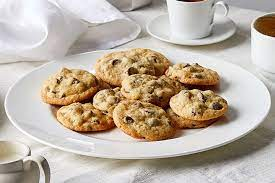

Best Chocolate Chip Cookies
Ingredients:
- 1 cup butter, softened
- 1 cup white sugar
- 1 cup packed brown sugar
- 2 eggs
- 1 teaspoon vanilla extract
- 3 cups all-purpose flour
- 1 teaspoon baking soda
- 1/2 teaspoon baking powder
- 1/2 teaspoon salt
- 2 cups chocolate chips
Instructions:
- Preheat oven to 350°F (175°C).
- Cream together butter, white sugar, and brown sugar until smooth. Beat in the eggs one at a time, then stir in the vanilla.
- In a separate bowl, combine flour, baking soda, baking powder, and salt. Gradually add this to the butter mixture.
- Stir in the chocolate chips.
- Drop rounded tablespoons of dough onto ungreased baking sheets.
- Bake 10-12 minutes, or until golden brown around the edges. Allow cookies to cool on baking sheet for 5 minutes before transferring to a wire rack to cool completely.
Classic Grilled Cheese
Ingredients:
- Bread slices
- Butter, softened
- Sliced cheddar cheese
- Sliced mozzarella cheese
Instructions:
- Butter one side of each bread slice.
- Place a slice of cheddar cheese and a slice of mozzarella cheese between two bread slices (buttered side facing out).
- Heat a non-stick skillet over medium heat.
- Place the sandwich in the skillet and cook until the bread is golden brown and the cheese is melted, about 3-4 minutes per side.
- Remove from the skillet, let it cool for a minute, slice, and serve.
Margherita Pizza
Ingredients:
- Pizza dough
- 1/2 cup pizza sauce
- 1 1/2 cups fresh mozzarella cheese, sliced
- Fresh basil leaves
- Olive oil
- Salt and pepper, to taste
Instructions:
- Preheat your oven to the highest temperature (usually around 475°F or 245°C).
- Roll out the pizza dough on a floured surface to your desired thickness.
- Place the rolled-out dough on a pizza stone or baking sheet.
- Spread pizza sauce evenly over the dough.
- Arrange mozzarella slices on top of the sauce.
- Drizzle with olive oil and season with salt and pepper.
- Bake in the preheated oven until the crust is golden and the cheese is bubbly (about 10-15 minutes).
- Remove from the oven, sprinkle fresh basil leaves, slice, and serve.
Cheeseburger Sliders
Ingredients:
- 1 lb ground beef
- Salt and pepper, to taste
- 1/2 teaspoon garlic powder
- 1/2 teaspoon onion powder
- 12 small slider buns
- 6 slices cheddar cheese, halved
- Lettuce, tomato, pickles (optional, for toppings)
Instructions:
- Preheat grill or stovetop griddle over medium-high heat.
- In a bowl, combine ground beef, salt, pepper, garlic powder, and onion powder. Mix well and form into small patties.
- Grill patties for 3-4 minutes on each side or until cooked to your preferred doneness.
- During the last minute of cooking, place a slice of cheddar cheese on each patty and cover to melt the cheese.
- Toast slider buns on the grill or in a toaster.
- Assemble sliders by placing a cheese-covered patty on the bottom half of each bun. Top with lettuce, tomato, pickles if desired, and the top half of the bun.
- Serve hot.
Chicken Parmesan
Ingredients:
- 4 boneless, skinless chicken breasts
- Salt and pepper, to taste
- 1 cup all-purpose flour
- 2 large eggs, beaten
- 1 cup breadcrumbs
- 1 cup marinara sauce
- 1 cup shredded mozzarella cheese
- 1/4 cup grated Parmesan cheese
- Fresh basil leaves, for garnish
Instructions:
- Preheat oven to 375°F (190°C).
- Season chicken breasts with salt and pepper.
- Dredge each chicken breast in flour, dip into beaten eggs, and coat with breadcrumbs.
- In a skillet, heat olive oil over medium-high heat. Cook chicken breasts until golden brown on both sides, about 3-4 minutes per side.
- Place cooked chicken in a baking dish. Top each breast with marinara sauce, mozzarella, and Parmesan cheese.
- Bake in the preheated oven for 25-30 minutes or until the chicken is cooked through and the cheese is melted and bubbly.
- Garnish with fresh basil leaves before serving.